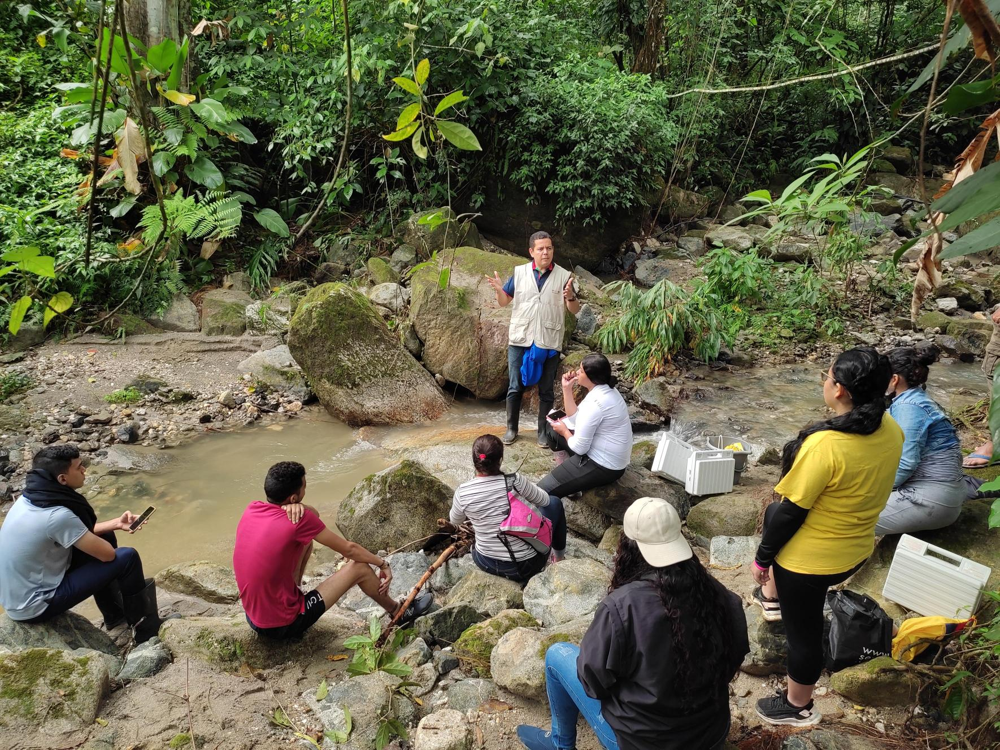

Salida de Campo Ecología 1
Ambiente y ensamblaje de macrinvertebrados acuáticos
TEMA: Salida de Campo de Ecología 1

La presente actividad tiene como objetivo, el reconocimiento de ecosistemas en ambientes fluviales, para aprender a evaluar parámetros ambientales, relacionados con la hidrología, la fisicoquímica y la geomorfología, asícomo el entorno relacionado con la vegetación de las riberas y la relación de estos atributos con la estructura y diversidad de ensamblajes de macroinvertebrados acuáticos, bajo diferentes escenarios de alteración que se evidencian en el sector de Minca, Sierra Nevada de Santa Marta.
Guía de campo
La siguiente guía recoge los diferentes pasos a realizar en campo, es necesario estudiarla, dias previos a la actividad, para tener mayor claridad sobre aspectos necesarios.
Enlace a la guía de Campo Guía general de campo, que será alimentada con los cuatro formatos que se relacionan a continuación.
A continuación se relacionan algunos enlaces complementarios que se deben descargar para los diferentes momentos de la actividad: antes de, durante y después de la salida de campo.
Formatos de campo_sept. 2.xlsx Se requiere llevar este archivo para la actividad de cómputo que realizarémos durante la salida.
Formatos de campo para imprimir.docx Es necesario que cada grupo de trabajo, lleve estas guías impresas, para tabular la información en los sitios a visitar.
Guía de Campo - RQI.pdf Cada grupo debe llevar una copia impresa de esta guía, la cual se relaciona con la valoración de las riberas en los tramos del río a visitar.
4.1 Tabulación taxones identificados (grupo 1) En este enlace, se tabularán los resultados de la identificación y conteo de taxones, que se realizará en el laboratorio de Biología, posterior a la salida de campo.
4.2 Tabulación taxones identificados (grupo 2) Cada estudiante debe tener claro a que grupo de ecología pertenece, para que no haya inconvenientes a la hora de tabular los datos.